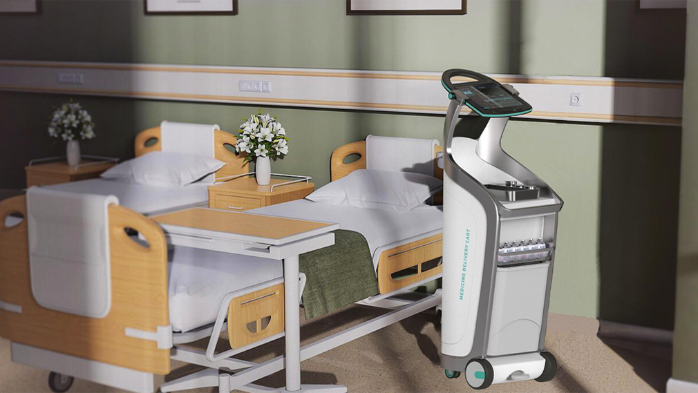
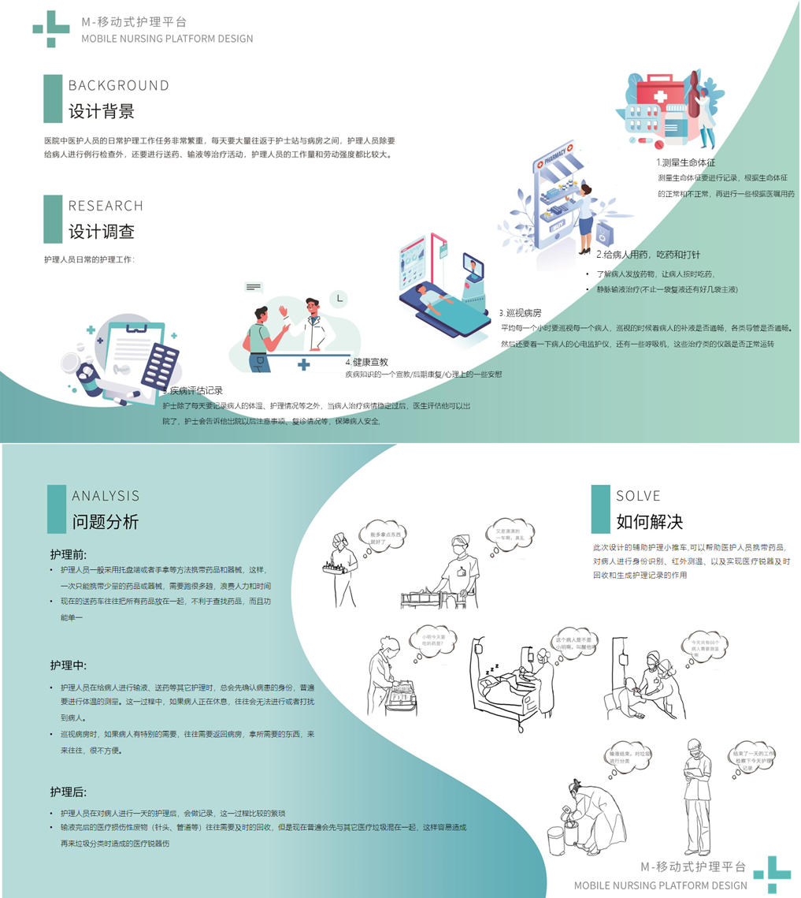
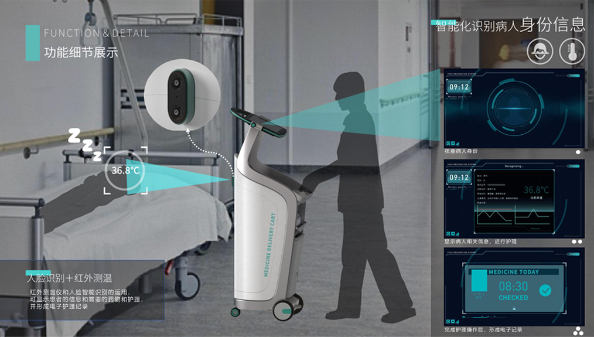
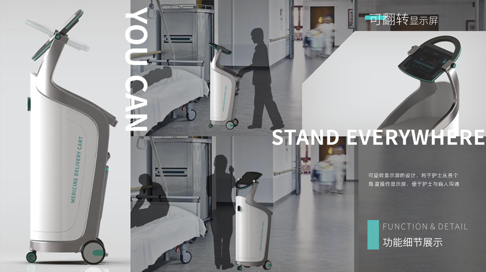
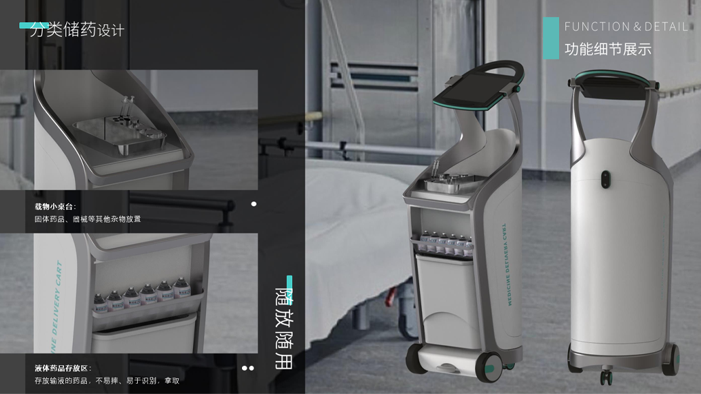
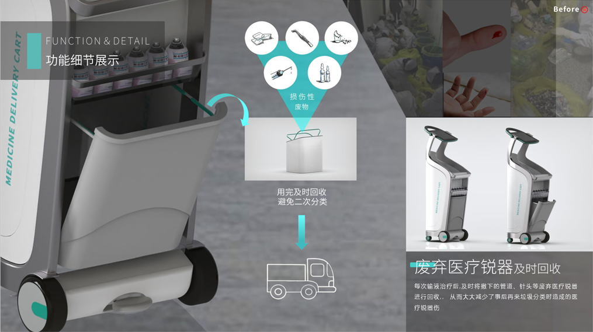

灵捷 | Mobile Nursing Platform Design
The daily nursing tasks of medical staff are very heavy, and they have to go back and forth between the nurse station and the ward every day.In addition to performing routine examinations on patients, nursing staff also carry out treatment activities such as drug delivery and infusion. Nursing staff workload and labor intensity are relatively large.
The auxiliary nursing cart designed this time can help medical staff to carry medicines, identify patients, measure infrared temperature, and realize the functions of timely recovery of medical sharps and generation of nursing records.
Preliminary User Survey
Function ＆ Details
The use of infrared thermometers and intelligent face recognition can display patient information and required medicines and care, and form electronic care records.
The design of the rotatable display screen is convenient for nurses to operate the display screen from various angles, and it is convenient for nurses to communicate with patients.
Adopt classified medicine storage design: small table for carrying cargo and storage area for liquid medicine. Solid medicines, instruments and other items are stored on the small table. Liquid medicine storage area Stores infusion medicines, which are not easy to fall, and are easy to identify and take.
After each infusion treatment, discarded medical sharps such as pipes and needles should be recycled in a timely manner, thereby greatly reducing the medical sharps injury caused by garbage sorting afterwards.
Designer: Ketong Xu Instructor: Dr. Jiefeng Lv /Professor Jiefeng Lv